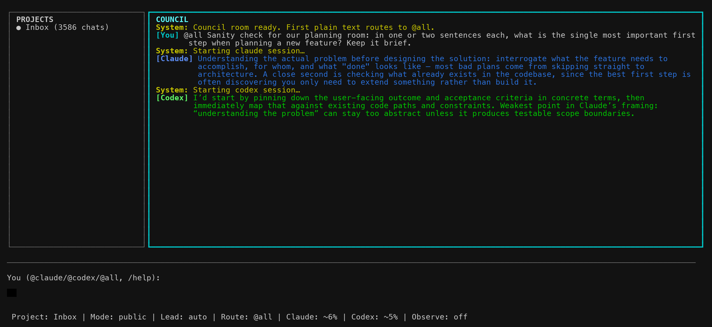

claude code + codex, on your own computer
Two models.
Five tools.
Botference runs Claude Code and Codex side by side, through the command-line tools you already have. It started as a planning council. It now holds five tools, and you can use each one alone.
git clone https://github.com/angadhn/botference
$ cd botference && ./botference --help
MIT-licensed · runs on the Claude Code and Codex CLIs you already have · one of them is enough to start

Council — you, Claude and Codex in one chat, in your terminal. ./botference
A bot can hand the floor to the other bot, so the two argue a point before they come back to you.
A turn and token budget limits each exchange, and you can type at any time.
Ask for a plan and they write it to implementation-plan.md; ask for code and they can start build agents.
botference plan --web serves the same council in a browser, and --share puts it on your phone.
ready For people who use both Claude Code and Codex and want two models to check each other's plans.
Planning is the most mature part of botference. The build loop and research-plan are experimental.
Discuss — highlight anything on the web, ask the bots in the margin. ./botference discuss
Discuss is a browser extension and a small local server, the companion.
Mention @claude, @codex or @all in a comment, and the bots answer in the same thread.
Each page exports to one Obsidian note. A library chat asks about every page you annotated,
and a question vault turns a passage into a quiz question and asks it back on a schedule.
git clone https://github.com/angadhn/botference
$ cd botference && ./botference discuss
then make it a browser extension, once: open chrome://extensions
(or brave://extensions), switch on Developer mode,
click Load unpacked, pick frontends/plugin/extension —
or just ask Claude Code to set it up for you.
./botference discuss --install-autostart makes it permanent on macOS;
the council is optional
in daily use For people who read a lot on the web and keep notes in Obsidian. It changes often, and it is not in an extension store. A permanent address for your phone needs your own domain on Cloudflare.
Document review — margin comments on your LaTeX or Markdown, with the bots in the threads. botference review
Run it in a document repository. It renders a LaTeX, Markdown or Jupyter Book source as a web page with comments in the margin. Tag a bot in a comment, and it answers or suggests a change. Apply writes an accepted change to the source; Commit commits it. Other people review through git or a password-protected link.
works For people who write papers, theses or books in LaTeX or Markdown. It needs pandoc. The review hub, which keeps several papers online at one address, needs your own domain on Cloudflare.
Blygger — publish a Discuss thread to your own site as a blyg post. /tk-claude /tk-codex
Blygger is an open protocol for small blogs that quote each other by reference. On a Blygger post, a highlight is a quote by reference, and your thread is a response by default. Press the paper plane, and your site's own commands publish the post. Presses wait in a queue and go out one at a time. An agent's passage stays in a marked box. The Hub is a private feed of the blygs you follow.
experimental For people who write a Blygger blog. Built during the Blygger hackathon, 20–27 November 2026. The only example set-up is one Jekyll site. What it does · what it promises (proposed laws)
Agent tools — let a coding agent see the page it built, and keep its server running. botference see
botference see opens a page or a local HTML file in headless Chrome and writes a phone and a desktop screenshot for the agent to read.
botference service starts a server or a tunnel that keeps running after the agent's shell ends.
small For people who let coding agents build web pages, charts or servers. see needs Chrome.
A personal project — one person builds botference for their own work.
Some parts assume that person's set-up: the council's Google Docs and mail tools need a separate Google account, and autostart and the review hub's device approval work on macOS only. The README says how ready each part is.
Questions people ask
- Can I chat with a webpage using my Claude subscription?
- Yes. Discuss, the web annotator, talks to the Claude Code CLI already installed and authenticated on your machine, so it runs on your existing subscription. There are no API keys to paste and no third-party service in the middle — nothing leaves your machine but the page you were already reading.
- How do I comment on any website with AI?
- Load the browser extension once from
frontends/plugin/extension, runbotference discussin your workspace, then highlight a passage on any page and leave a comment mentioning @claude, @codex or @all. The bots reply in that same margin thread, streaming into a drawer on the right. - Can I use Claude Code and Codex together in one conversation?
- That is the point of the council. Both CLIs join one free-form room where a reply can hand the floor to the other model, recursively, until the thread converges and returns to you. Bot-to-bot debate runs against a visible turn and token budget, and typing interrupts at the next turn boundary.
- Do I need an API key to use Botference?
- No. Botference drives the Claude Code and Codex CLIs you already have logged in, so it inherits their authentication and your existing plan. One CLI is enough to start — with both installed, @all gets you two models disagreeing about the same problem.
- Is Botference free and open source?
- Yes — MIT-licensed and built in the open, free to clone and run. The only cost is the CLI subscriptions you already pay for. Sponsorship is optional and funds continued development.
- Which parts of Botference are ready to use?
- Planning in the council is the most mature part. Discuss is in daily use and changes
often. Document review works and needs pandoc. Blygger publishing, the
buildloop andresearch-planare experimental. Botference is a personal project, and some parts assume one person's set-up. - Can I run the planning council on my phone?
- Yes.
botference plan --webserves the same council as a chat app — streaming transcript, slash commands, image attachments, markdown replies, plus a per-agent context panel. Adding--shareputs a password gate and a tunnel in front of it: one URL to open on your phone.